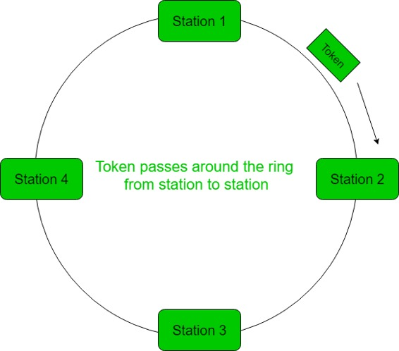
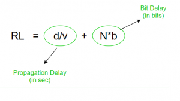
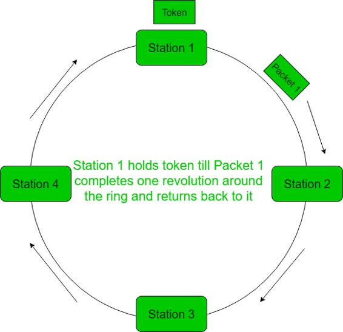
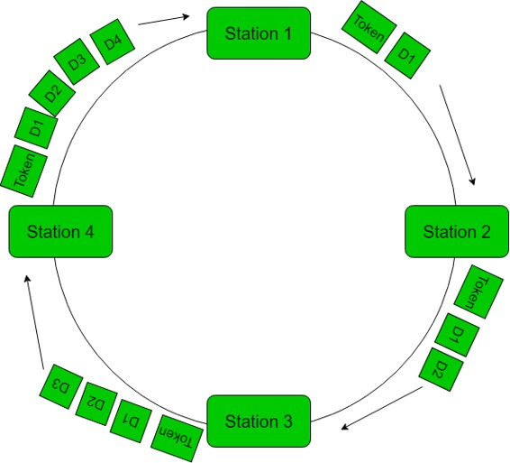

Token Ring protocol is a communication protocol used in Local Area Network (LAN). In a token ring protocol, the topology of the network is used to define the order in which stations send. The stations are connected to one another in a single ring. It uses a special three-byte frame called a “token” that travels around a ring. It makes use of Token Passing controlled access mechanism. Frames are also transmitted in the direction of the token. This way they will circulate around the ring and reach the station which is the destination.

Ring Latency –
The time taken by a single bit to travel around the ring is known as ring latency.

Where,
d = length of the ring
v = velocity of data in ring
N = no. of stations in ring
b = time taken by each station to hold the bit before transmitting it (bit delay)
Converting N*b into sec –
RL = d/v + (N*b)/B (B – bandwidth)
Converting d/v into bits –
RL = (d/v)*B + N*b (B – bandwidth)
Cycle Time –
The time taken by the token to complete one revolution of the ring is known as cycle time.
Cycle time = Tp + (THT*N) Where, THT - Token Holding Time Tp - Propagation delay(d/v)
Token Holding Time (THT) –
The maximum time a token frame can be held by a station is known as THT, by default it is set to 10msec. No station can hold the token beyond THT.
Calculating THT:

1. Delayed token reinsertion (DTR) –
- In this, the sender transmit the data packet and waits till the time the whole packet takes the round trip of the ring and return to it. When the whole packet is received by the sender, then it releases the token
- There is only one packet in the ring at an instance
- More reliable than ETR

In this case,
THT = Tt + RL
= Tt + Tp + N*b (In most cases, bit delay is 0)
So, THT = Tt + Tp
where Tt = transmission delay
Tp = propagation delay
2. Early token reinsertion (ETR) –
- Sender does not wait for the data packet to complete revolution before releasing the token. Token is released as soon as the data is transmitted
- Multiple packets present in the ring
- Less reliable than DTR

Station 1: Receives the token and transmits data D1 and then, releases the token.
Station 2: Receives D1 (puts it onto the other end) and the token and then, transmits data D2 and releases the token.
Station 3: Receives D1 –> transmits D1
Receives D2 –> transmits D2
Receives token –> transmits D3
Releases token.
Station 4: Receives D1 –> transmits D1
Receives D2 –> transmits D2
Receives D3 –> transmits D3
Receives token –> transmits D4
Releases token.
Station 1: Receives D1 –> discards D1 as D1 has completed its journey
Receives D2 –> transmits D2
Receives D3 –> transmits D3
Receives D4 –> transmits D4
Receives token –> transmits D1(new)
Releases token.
(and the cycle continues so on…..)
In this case,
THT = Tt
where Tt = transmission delay
Tp = propagation delay
Efficiency –
Efficieny, e = useful time/ total time
useful time = N*Tt
total time = cycle time = Tp + (THT*N)
So, e = (N*Tt)/(Tp + (THT*N))
1. Delayed token reinsertion –
In this case, THT = Tt + Tp
So, cycle time = Tp + N*(Tt + Tp)
Efficiency, e = (N*Tt)/(Tp + N*(Tt + Tp))
= 1/(1 + a*((N+1)/N))
where a = Tp/Tt
2. Early token reinsertion –
In this case, THT = Tt
So, cycle time = Tp + N*(Tt)
Efficiency, e = (N*Tt)/(Tp + N*(Tt))
= 1/(1 + a*(1/N))
where a = Tp/Tt
GATE Practice Questions –
- GATE-CS-2014-(Set-1) | Question 65
- GATE-CS-2014-(Set-2) | Question 35
- GATE IT 2007 | Question 72
- GATE IT 2007 | Question 73
- GATE-IT-2004 | Question 82